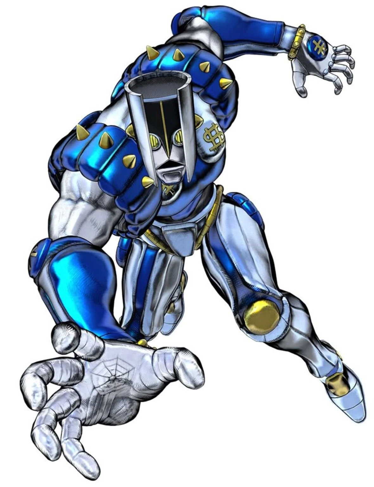

05THE HAND
Execute / Mobility / Space Control
THE HAND
ROLE:
Execute / Mobility / Rescue / Space Control
Difficulty:
High
Best For:
Players who like heavy short-range attacks mixed with movement, teammate rescue and ERASE, all sharing one resource.
SPACE GAUGE
Maximum 100 • Passive regen 2/sec.
- Punch contact: +5
- Barrage hit: +1
- Space Pull: costs 20
- Space Dash: costs 35
- ERASE: costs 35
Some committed utility/erase actions can spend Gauge even if they do not end up hitting a target, so aim before you commit.
SKILL 1 — PUNCH
Cooldown: about 0.48 sec • Range: 2.8 tiles • Full charge: about 1.25 sec.
Heavy close-range hit and the best single-contact source of Space Gauge.
SKILL 2 — BARRAGE
Cooldown: about 5.4 sec • Normal: 16 hits • Full charge: 25 hits.
Each real contact can refill Gauge, making it useful for rebuilding resources in melee.
SKILL 3 TAP — SPACE DASH
Tap/partial charge to dash along the mouse direction, with a command range up to about 14 tiles. The path is checked for obstacles.
A successful dash costs 35 Gauge. If movement is completely blocked and no dash happens, the movement cost is not spent.
SKILL 3 FULL — SPACE PULL
Full charge threshold: about 0.7 sec • Cost: 20 Gauge • Pull range: about 21.875 tiles along the forward corridor.
Players can be pulled even when PvP/Safety protects HP damage, because Pull is utility and does not deal player HP damage.
Use it to rescue teammates, bring a target into range, or reorganize a bad fight.
SKILL 4 — ERASE
Cooldown: about 25 sec • Range: about 3.25 tiles • Cost: 35 Gauge.
ERASE is a close-range attack. Contact is checked when the hand actually reaches the attack line, so a real miss stays a miss.
It works on supported living/world targets and SHA. PvP/Safety-protected players cannot be lethally erased.